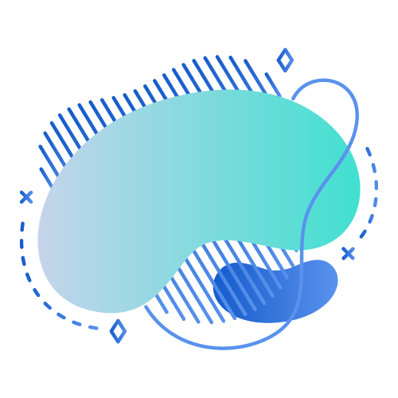

Boletim PSB | CRAS Tupy
Período de referência: 1º Semestre de 2026

Perfil do Território
Agendamentos CadÚnico
Taxa de Comparecimento
290 agendamentos individuais estão com status "Pendente" (nunca atualizado no sistema para Atendido/Ausente) e não entram no cálculo abaixo — podem indicar registros esquecidos que merecem revisão.
Perfil de Vulnerabilidade Territorial
Perfil dos Atendidos
Raça/Cor dos Atendidos
Sexo dos Atendidos
Pessoas Atendidas Únicas por Mês
Atendimento Individual (PAIF)
Motivos de atendimento mais frequentes
Atendimentos por mês
Atendimento Coletivo (SCFV)
Dispensações e BPC
Composição de dispensações
Dispensações por mês
Quadro de Pessoal
Carga de atendimento por profissional
| Assistente Social | Psicólogos | Educadores | Pedagogo |
|---|---|---|---|
| 3 | 2 | 3 | 1 |
Contexto da Unidade
Atendimento
No período, a unidade realizou 2.632 atendimentos individuais (PAIF) — 28% abaixo do que se observa, em média, nas demais unidades (3.638) — e 647 atendimentos em grupo (SCFV), ocupando a 7ª posição em volume de atendimentos PAIF entre os 8 CRAS. Foram 3.349 famílias referenciadas e 80 visitas domiciliares no período.
Equipe
AS: carga de 189,1 atendimentos por profissional (50% abaixo do que se observa, em média, nas demais unidades (377)), 8ª colocação em carga entre as 8 unidades. Psicólogo: carga de 105,1 atendimentos por profissional (um patamar 60% abaixo da média das 8 unidades, hoje em 260), 8ª colocação em carga entre as 8 unidades. Educador Social: carga de 679,9 atendimentos por profissional (28% abaixo da média municipal de 951), 5ª colocação em carga entre as 8 unidades. Pedagogo: carga de 492,2 atendimentos por profissional (700% acima do que se observa, em média, nas demais unidades (62)), 1ª colocação em carga entre as 8 unidades. Considerando a carga combinada dos 3 cargos núcleo (AS, Psicólogo, Educador Social), a unidade ocupa a 8ª posição em intensidade de demanda por profissional entre as 8 CRAS.
Território e Vulnerabilidade
A renda média familiar referenciada é de R$ 892,5 (1% abaixo da média municipal de R$ 899,1). 29% das famílias referenciadas estão no Bolsa Família (7% abaixo do que se observa, em média, nas demais unidades (32%)). O indicador de maior incidência entre as famílias referenciadas é "Famílias com crianças/adolescentes 0–17 (%)", em 57% (8% acima da média municipal de 53%).
Benefícios
Foram 510 dispensações no período — um patamar 4% acima da média das 8 unidades, hoje em 489 — colocando a unidade na 4ª posição em volume de dispensações entre as 8 CRAS. O benefício mais dispensado na unidade foi "Prato Cheio", com 228 dispensações.